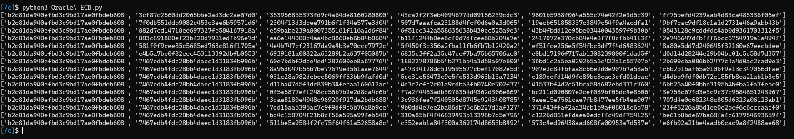
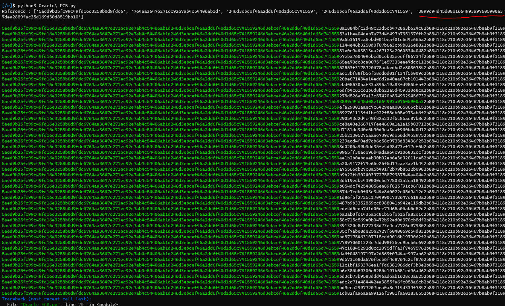

Présentation de l'attaque 'Padding Oracle' sur de l'AES ECB
Planted September 19, 2022
Introduction
L’AES (“Advanced Encryption Standard”) est un chiffrement par blocs utilisé de nos jours dans la sécurité informatique. Il repose sur le chiffrement d’information découpé en plusieurs blocs et le chiffrement de ces blocs peuvent être fait de plusieurs manières selon la configuration du système. Ainsi il en existe plusieurs modes :
- ECB
- CBC
- CFB
- OFB
- CTR
- CTS
- …
Aujourd’hui, nous allons aborder une attaque présente sur l’AES en mode ECB .
Comprendre le mode ECB
Comme présenté avant, ECB est un mode de chiffrement des blocs d’information.
(ECB pour Electronic Code Book)
Pour chiffrer le message, on va découper notre message par blocs de 16 charactères et on va chiffrer grâce à une clé de 16 bytes nos blocs. C’est le mode AES le plus simple puisqu’il suffit d’appliquer un chiffrement basique avec une même clé sur tous les blocs, un à un :

Notion de Padding .
Supposons le message suivant :
Unchasseursachantchassersanssonchien
On peut diviser le message en 2 blocs de 16 bytes:
Unchasseursachantchassersansso
Il reste nchien mais il n’y a pas assez de bytes pour former un bloc complet.
On va donc padder le message pour que la taille totale soit un multiple de la taille du bloc . (Ici 16)
Il existe plusieurs normes de padding (Pkcs 1 , 1.5 ,7 …) .
(On va simplifier ici en ajoutant des A)
Le 3ème bloc est donc :
nchienAAAAAAAAAA
Problème du Padding et Vulnérabilité sur de l’AES ECB
Contrairement à l’AES CBC par exemple, le mode ECB chiffre chaque bloc indépendamment des autres. Ainsi, si je chiffre 2 fois le même bloc , j’aurais 2 fois la même sortie.
Supposons Maintenant le cas suivant :
On a accés à un oracle qui nous permet de chiffrer nos messages dans ce mode d'AES .
On sait aussi que notre entrée est concaténée à un autre message qui nous ai inconnue.
On a donc le schéma suivant :
AES_ECB(PAD(entrée_utilisateur + SECRET))
(On note ’entrée_utilisateur’: ‘inp’)
Clair = BBBBBBBBBBBBBBBB (16*B)
Chiffré = BBBBBBBBBBBBBBBB + SECRET
Supposons que le SECRET SOIT MYNAMEISBONDJAMESBOND . Alors
Clair = BBBBBBBBBBBBBBB (15*B)
Chiffré = BBBBBBBBBBBBBBBM + YNAMEISBONDJAMES + BONDAAAAAAAAAAAA
Grâce aux propriétés de l’ ECB , on peut donc faire leak le secret :
Je peux tester de chiffrer :
BBBBBBBBBBBBBBBABBBBBBBBBBBBBBBBBBBBBBBBBBBBBBBC- …
Un fois arriver à F
Le chiffré de
BBBBBBBBBBBBBBBFetBBBBBBBBBBBBBBB
Auront le même premier bloc !
On peut donc continuer la manipulation en passant à 14 B :
Clair = BBBBBBBBBBBBBB (15*B)
Chiffré = BBBBBBBBBBBBBBMY + NAMEISBONDJAMESB + ONDAAAAAAAAAAAAA
On Test :
BBBBBBBBBBBBBBMABBBBBBBBBBBBBBMBBBBBBBBBBBBBBBMC- …
Jusque Y et on aura le premier bloc commun entre :
Chiffré de
BBBBBBBBBBBBBBMYetBBBBBBBBBBBBBB
Annexes : Analyse sur un préfix .
On a supposé le schéma suivant :
AES_ECB(PAD(entrée_utilisateur + SECRET))
Celui-ci rend l’attaque possible car il nous permet de Controller la taille des blocs qui vont être chiffrés .
Si un texte est placé avant notre entrée. On se retrouve comme ceci :
AES_ECB(PAD(TEXTE + entrée_utilisateur + SECRET))
On ne sait donc pas combien de bloc il faut pour fermer le bloc précédent , ouvert par la fin du texte .
Si on se base sur un ancien challenge que j’ai réalisé en CTF ,on peut tester les différentes tailles entrées et analyser les résultats :
def Pad_PreviousBloc():
for i in range(15):
print(Spliter(Send(b"B" * i + 16* b'A')))

On remarque que après avoir envoyé 6*B , on obtient un 2nd bloc constant :
7467edb4fdc28bb4dae1d3183fb996b
On va donc par la suite , ajouter 6 bytes avant de placer notre padding
Notes
Sin on suppose le cas où on leak bytes-par-bytes le secret qui succède notre entrée :
Il faut avoir un padding suffisamment long pour pour décaler le SECRET sur toute sa longueur . On peut donc envoyer plusieurs blocs de padding :
par exemple 16*B+15*C
Scriptons tous ca !
(L’exemple provient de ma solution sur un challenge d’un challenge de Crypto)
On a :
- Les fonctions de communications avec le server
- Une fonction pour
- Séparer en blocs de 16 bytes
- Colorer les blocs communs entre
2 chiffrés
from pwn import *
from binascii import unhexlify,hexlify
context.log_level = 'critical'
def Get_proc():
proc = remote('challenges.hackademint.org',32049)
proc.recvuntil(b'[5] Quitter la demeure de l\'oracle')
proc.sendline(b'2')
return proc
def Send(data):
proc.recvuntil(b'quitter:')
proc.sendline(hexlify(data))
proc.recvline()
proc.recvline()
res = bytes(proc.recvline().decode().strip(),'utf-8')
if b'Que choisissez-vous de faire?' in res:
proc.sendline(b'2')
return b''
return res
def Spliter(data,ref=None):
split = [data[32*i:32*(i+1)].decode() for i in range(len(data)//32)]
if(ref == None):
return split
match = []
for i in range(len(split)):
match.append(split[i] if split[i]!=ref[i] else '\033[92m'+split[i]+'\033[0m')
return ''.join(match)
proc = Get_proc()
pad = 6
flag = b''
while True:
# Leak de la première lettre chiffré
payload = b'B'*pad +b'A'*(16*3-1-len(flag))
ref = Spliter(Send(payload)[32*4:32*5])
# Brute Force sur la dernière lettre pour matcher la référence
for i in range(256):
payload = b'B'*pad + b'A'* (16*3-1 - len(flag)) + flag + bytes([i])
res = Spliter(Send(payload)[32*4:32*5])
if(res == ref):
flag += bytes([i])
print(flag)
break
En résumé, on a ces notes ci :
Référence 1 : AAAAAAAAAA BBBBBB IIIIIIIIIIIIIIII IIIIIIIIIIIIIIIF LAG{....}
Test Invalide : AAAAAAAAAA BBBBBB IIIIIIIIIIIIIIII IIIIIIIIIIIIIIIA FLAG{....}
Test Valide : AAAAAAAAAA BBBBBB IIIIIIIIIIIIIIII IIIIIIIIIIIIIIIF FLAG{....}
Référence 2 : AAAAAAAAAA BBBBBB IIIIIIIIIIIIIIII IIIIIIIIIIIIIIFL AG{....}
Test Invalide : AAAAAAAAAA BBBBBB IIIIIIIIIIIIIIII IIIIIIIIIIIIIIFA FLAG{....}
Test Valide : AAAAAAAAAA BBBBBB IIIIIIIIIIIIIIII IIIIIIIIIIIIIIFL FLAG{....}
Référence X : AAAAAAAAAA BBBBBB Star{7h3_5_1n_EC B_S7and5_f0r_S3c cur17y}AAAAAAAAA
Test Invalide : AAAAAAAAAA BBBBBB Star{7h3_5_1n_EC B_S7and5_f0r_S3A cur17y}AAAAAAAAA
Test Valide : AAAAAAAAAA BBBBBB Star{7h3_5_1n_EC B_S7and5_f0r_S3c cur17y}AAAAAAAAA
Voici une illustration graphique qui montre le match sur une des lettres :
